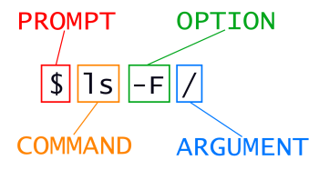

File Directory#
Learning Objectives#
Explain the similarities and differences between a file and a directory
Translate an absolute path into a relative path and vice versa
Construct absolute and relative paths that identify specific files and directories
Use options and arguments to change the behavior of a shell command
Demonstrate the use of tab completion and explain its advantages
Keypoints#
“The file system is responsible for managing information on the disk.”
“Information is stored in files, which are stored in directories (folders).”
“Directories can also store other directories, which then form a directory tree.”
“
pwdprints the user’s current working directory.”“
ls [path]prints a listing of a specific file or directory;lson its own lists the current working directory.”“
cd [path]changes the current working directory.”“Most commands take options that begin with a single
-.”“Directory names in a path are separated with
/on Unix, but\\on Windows.”“
/on its own is the root directory of the whole file system.”“An absolute path specifies a location from the root of the file system.”
“A relative path specifies a location starting from the current location.”
“
.on its own means ‘the current directory’;..means ‘the directory above the current one’.”
The part of the operating system responsible for managing files and directories is called the file system. It organizes our data into files, which hold information, and directories (also called ‘folders’), which hold files or other directories.
Several commands are frequently used to create, inspect, rename, modify, and delete files and directories. To start exploring them, we’ll go to our open shell window.
First, let’s find out where we are by running a command called pwd
(which stands for ‘print working directory’). Directories are like places — at any time
while we are using the shell, we are in exactly one place called
our current working directory. Commands mostly read and write files in the
current working directory, i.e. ‘here’, so knowing where you are before running
a command is important. pwd shows you where you are:
$ pwd
/Users/nelle
Here,
the computer’s response is /Users/nelle,
which is Nelle’s home directory:
Home Directory Variation#
The home directory path will look different on different operating systems. On Linux, it may look like /home/nelle, and on Windows, it will be similar to C:\Documents and Settings\nelle or C:\Users\nelle. (Note that it may look slightly different for different versions of Windows.) In future examples, we’ve used Mac output as the default - Linux and Windows output may differ slightly but should be generally similar.
We will also assume that your pwd command returns your user’s home directory. If pwd returns something different, you may need to navigate there using cd or some commands in this lesson will not work as written. See Exploring Other Directories for more details on the cd command.
To understand what a ‘home directory’ is, let’s have a look at how the file system as a whole is organized. For the sake of this example, we’ll be illustrating the filesystem on our scientist Nelle’s computer. After this illustration, you’ll be learning commands to explore your own filesystem, which will be constructed in a similar way, but not be exactly identical.
On Nelle’s computer, the filesystem looks like this:

At the top is the root directory
that holds everything else.
We refer to it using a slash character, /, on its own;
this character is the leading slash in /Users/nelle.
Inside that directory are several other directories:
bin (which is where some built-in programs are stored),
data (for miscellaneous data files),
Users (where users’ personal directories are located),
tmp (for temporary files that don’t need to be stored long-term),
and so on.
We know that our current working directory /Users/nelle is stored inside /Users
because /Users is the first part of its name.
Similarly,
we know that /Users is stored inside the root directory /
because its name begins with /.
Slashes#
Notice that there are two meanings for the / character. When it appears at the front of a file or directory name, it refers to the root directory. When it appears inside a path, it’s just a separator.
{: .callout}
Underneath /Users,
we find one directory for each user with an account on Nelle’s machine,
her colleagues Imhotep and Larry.

The user Imhotep’s files are stored in /Users/imhotep,
user Larry’s in /Users/larry,
and Nelle’s in /Users/nelle. Because Nelle is the user in our
examples here, therefore we get /Users/nelle as our home directory.
Typically, when you open a new command prompt, you will be in
your home directory to start.
Now let’s learn the command that will let us see the contents of our
own filesystem. We can see what’s in our home directory by running ls:
$ ls
Applications Documents Library Music Public
Desktop Downloads Movies Pictures
(Again, your results may be slightly different depending on your operating system and how you have customized your filesystem.)
ls prints the names of the files and directories in the current directory.
We can make its output more comprehensible by using the -F option
which tells ls to classify the output
by adding a marker to file and directory names to indicate what they are:
a trailing
/indicates that this is a directory@indicates a link*indicates an executable
Depending on your shell’s default settings, the shell might also use colors to indicate whether each entry is a file or directory.
$ ls -F
Applications/ Documents/ Library/ Music/ Public/
Desktop/ Downloads/ Movies/ Pictures/
Here, we can see that our home directory contains only sub-directories. Any names in our output that don’t have a classification symbol are plain old files.
Clearing your terminal#
If your screen gets too cluttered, you can clear your terminal using the clear command. You can still access previous commands using ↑ and ↓ to move line-by-line, or by scrolling in your terminal.
Getting help#
ls has lots of other options. There are two common ways to find out how
to use a command and what options it accepts —
depending on your environment, you might find that only one of these ways works:
We can pass a
--helpoption to the command (not available on macOS), such as:$ ls --help
We can read its manual with
man(not available in Git Bash), such as:$ man ls
We’ll describe both ways next.
The --help option#
Most bash commands and programs that people have written to be
run from within bash, support a --help option that displays more
information on how to use the command or program.
$ ls --help
Usage: ls [OPTION]... [FILE]...
List information about the FILEs (the current directory by default).
Sort entries alphabetically if neither -cftuvSUX nor --sort is specified.
Mandatory arguments to long options are mandatory for short options, too.
-a, --all do not ignore entries starting with .
-A, --almost-all do not list implied . and ..
--author with -l, print the author of each file
-b, --escape print C-style escapes for nongraphic characters
--block-size=SIZE scale sizes by SIZE before printing them; e.g.,
'--block-size=M' prints sizes in units of
1,048,576 bytes; see SIZE format below
-B, --ignore-backups do not list implied entries ending with ~
-c with -lt: sort by, and show, ctime (time of last
modification of file status information);
with -l: show ctime and sort by name;
otherwise: sort by ctime, newest first
-C list entries by columns
--color[=WHEN] colorize the output; WHEN can be 'always' (default
if omitted), 'auto', or 'never'; more info below
-d, --directory list directories themselves, not their contents
-D, --dired generate output designed for Emacs' dired mode
-f do not sort, enable -aU, disable -ls --color
-F, --classify append indicator (one of */=>@|) to entries
... ... ...
Unsupported command-line options#
If you try to use an option that is not supported, ls and other commands will usually print an error message similar to:
$ ls -j
ls: invalid option -- 'j'
Try 'ls --help' for more information.
The man command#
The other way to learn about ls is to type
$ man ls
This command will turn your terminal into a page with a description
of the ls command and its options.
To navigate through the man pages,
you may use ↑ and ↓ to move line-by-line,
or try B and Spacebar to skip up and down by a full page.
To search for a character or word in the man pages,
use / followed by the character or word you are searching for.
Sometimes a search will result in multiple hits.
If so, you can move between hits using N (for moving forward) and
Shift+N (for moving backward).
To quit the man pages, press Q.
Manual pages on the web#
Of course, there is a third way to access help for commands: searching the internet via your web browser. When using internet search, including the phrase unix man page in your search query will help to find relevant results.
GNU provides links to its manuals including the core GNU utilities, which covers many commands introduced within this lesson.
Exploring More ls Flags#
You can also use two options at the same time. What does the command ls do when used with the -l option? What about if you use both the -l and the -h option?
Some of its output is about properties that we do not cover in this lesson (such as file permissions and ownership), but the rest should be useful nevertheless.
Solution
The -l option makes ls use a long listing format, showing not only the file/directory names but also additional information, such as the file size and the time of its last modification. If you use both the -h option and the -l option, this makes the file size ‘human readable’, i.e. displaying something like 5.3K instead of 5369. This can either be passed in separately, as ls -l -h, or combined ls -lh, although you can’t always rely on the combined form.
Listing in Reverse Chronological Order#
By default, ls lists the contents of a directory in alphabetical order by name. The command ls -t lists items by time of last change instead of alphabetically. The command ls -r lists the contents of a directory in reverse order.
Which file is displayed last when you combine the -t and -r options?
Hint: You may need to use the -l option to see the last changed dates.
Solution
The most recently changed file is listed last when using -rt. This can be very useful for finding your most recent edits or checking to see if a new output file was written.
Exploring Other Directories#
Not only can we use ls on the current working directory,
but we can use it to list the contents of a different directory.
Let’s take a look at our Desktop directory by running ls -F Desktop,
i.e.,
the command ls with the -F option and the argument Desktop.
The argument Desktop tells ls that
we want a listing of something other than our current working directory:
$ ls -F Desktop
shell-lesson-data/
Note that if a directory named Desktop does not exist in your current working directory,
this command will return an error. Typically, a Desktop directory exists in your
home directory, which we assume is the current working directory of your bash shell.
Your output should be a list of all the files and sub-directories in your
Desktop directory, including the shell-lesson-data directory you downloaded at
the setup for this lesson.
On many systems,
the command line Desktop directory is the same as your GUI Desktop.
Take a look at your Desktop to confirm that your output is accurate.
As you may now see, using a bash shell is strongly dependent on the idea that your files are organized in a hierarchical file system. Organizing things hierarchically in this way helps us keep track of our work: it’s possible to put hundreds of files in our home directory, just as it’s possible to pile hundreds of printed papers on our desk, but it’s a self-defeating strategy.
Now that we know the shell-lesson-data directory is located in our Desktop directory, we
can do two things.
First, we can look at its contents, using the same strategy as before, passing
a directory name to ls:
$ ls -F Desktop/shell-lesson-data
exercise-data/ north-pacific-gyre/
Second, we can actually change our location to a different directory, so we are no longer located in our home directory.
The command to change locations is cd followed by a
directory name to change our working directory.
cd stands for ‘change directory’,
which is a bit misleading:
the command doesn’t change the directory;
it changes the shell’s idea of what directory we are in.
The cd command is akin to double-clicking a folder in a graphical interface to get into a folder.
Let’s say we want to move to the data directory we saw above. We can
use the following series of commands to get there:
$ cd Desktop
$ cd shell-lesson-data
$ cd exercise-data
These commands will move us from our home directory into our Desktop directory, then into
the shell-lesson-data directory, then into the exercise-data directory.
You will notice that cd doesn’t print anything. This is normal.
Many shell commands will not output anything to the screen when successfully executed.
But if we run pwd after it, we can see that we are now
in /Users/nelle/Desktop/shell-lesson-data/exercise-data.
If we run ls -F without arguments now,
it lists the contents of /Users/nelle/Desktop/shell-lesson-data/exercise-data,
because that’s where we now are:
$ pwd
/Users/nelle/Desktop/shell-lesson-data/exercise-data
$ ls -F
animal-counts/ creatures/ numbers.txt proteins/ writing/
We now know how to go down the directory tree (i.e. how to go into a subdirectory), but how do we go up (i.e. how do we leave a directory and go into its parent directory)? We might try the following:
$ cd shell-lesson-data
-bash: cd: shell-lesson-data: No such file or directory
But we get an error! Why is this?
With our methods so far,
cd can only see sub-directories inside your current directory. There are
different ways to see directories above your current location; we’ll start
with the simplest.
There is a shortcut in the shell to move up one directory level that looks like this:
$ cd ..
.. is a special directory name meaning
“the directory containing the current directory”,
or more succinctly,
the parent of the current directory.
Sure enough,
if we run pwd after running cd .., we’re back in /Users/nelle/Desktop/shell-lesson-data:
$ pwd
/Users/nelle/Desktop/shell-lesson-data
The special directory .. doesn’t usually show up when we run ls. If we want
to display it, we can add the -a option to ls -F:
$ ls -F -a
./ ../ exercise-data/ north-pacific-gyre/
-a stands for ‘show all’;
it forces ls to show us file and directory names that begin with .,
such as .. (which, if we’re in /Users/nelle, refers to the /Users directory).
As you can see,
it also displays another special directory that’s just called .,
which means ‘the current working directory’.
It may seem redundant to have a name for it,
but we’ll see some uses for it soon.
Note that in most command line tools, multiple options can be combined
with a single - and no spaces between the options: ls -F -a is
equivalent to ls -Fa.
Two More Shortcuts#
The shell interprets a tilde (~) character at the start of a path to mean “the current user’s home directory”. For example, if Nelle’s home directory is /Users/nelle, then ~/data is equivalent to /Users/nelle/data. This only works if it is the first character in the path: here/there/~/elsewhere is not here/there/Users/nelle/elsewhere.
Another shortcut is the - (dash) character. cd will translate - into the previous directory I was in, which is faster than having to remember, then type, the full path. This is a very efficient way of moving back and forth between two directories – i.e. if you execute cd - twice, you end up back in the starting directory.
The difference between cd .. and cd - is that the former brings you up, while the latter brings you back.
Try it!
First navigate to ~/Desktop/shell-lesson-data (you should already be there).
$ cd ~/Desktop/shell-lesson-data
Then cd into the exercise-data/creatures directory
$ cd exercise-data/creatures
Now if you run
$ cd -
you’ll see you’re back in ~/Desktop/shell-lesson-data. Run cd - again and you’re back in ~/Desktop/shell-lesson-data/exercise-data/creatures
Absolute vs Relative Paths#
Starting from /Users/amanda/data, which of the following commands could Amanda use to navigate to her home directory, which is /Users/amanda?
cd .cd /cd /home/amandacd ../..cd ~cd homecd ~/data/..cdcd ..
Solution
No:
.stands for the current directory.No:
/stands for the root directory.No: Amanda’s home directory is
/Users/amanda.No: this command goes up two levels, i.e. ends in
/Users.Yes:
~stands for the user’s home directory, in this case/Users/amanda.No: this command would navigate into a directory
homein the current directory if it exists.Yes: unnecessarily complicated, but correct.
Yes: shortcut to go back to the user’s home directory.
Yes: goes up one level.
Relative Path Resolution#
Using the filesystem diagram below, if pwd displays /Users/thing, what will ls -F ../backup display?
../backup: No such file or directory2012-12-01 2013-01-08 2013-01-272012-12-01/ 2013-01-08/ 2013-01-27/original/ pnas_final/ pnas_sub/

Solution
No: there is a directory
backupin/Users.No: this is the content of
Users/thing/backup, but with.., we asked for one level further up.No: see previous explanation.
Yes:
../backup/refers to/Users/backup/.
ls Reading Comprehension#
Using the filesystem diagram below, if pwd displays /Users/backup, and -r tells ls to display things in reverse order, what command(s) will result in the following output:
pnas_sub/ pnas_final/ original/
ls pwdls -r -Fls -r -F /Users/backup
Solution
No:
pwdis not the name of a directory.Yes:
lswithout directory argument lists files and directories in the current directory.Yes: uses the absolute path explicitly.
General Syntax of a Shell Command#
We have now encountered commands, options, and arguments, but it is perhaps useful to formalise some terminology.
Consider the command below as a general example of a command, which we will dissect into its component parts:
$ ls -F /

ls is the command, with an option -F and an
argument /.
We’ve already encountered options which
either start with a single dash (-) or two dashes (--),
and they change the behaviour of a command.
Arguments tell the command what to operate on (e.g. files and directories).
Sometimes options and arguments are referred to as parameters.
A command can be called with more than one option and more than one argument, but a
command doesn’t always require an argument or an option.
You might sometimes see options being referred to as switches or flags, especially for options that take no argument. In this lesson we will stick with using the term option.
Each part is separated by spaces: if you omit the space
between ls and -F the shell will look for a command called ls-F, which
doesn’t exist. Also, capitalization can be important.
For example, ls -s will display the size of files and directories alongside the names,
while ls -S will sort the files and directories by size, as shown below:
$ cd ~/Desktop/shell-lesson-data
$ ls -s exercise-data
total 28
4 animal-counts 4 creatures 12 numbers.txt 4 proteins 4 writing
Note that the sizes returned by ls -s are in blocks.
As these are defined differently for different operating systems,
you may not obtain the same figures as in the example.
$ ls -S exercise-data
animal-counts creatures proteins writing numbers.txt
Putting all that together, our command above gives us a listing
of files and directories in the root directory /.
An example of the output you might get from the above command is given below:
$ ls -F /
Applications/ System/
Library/ Users/
Network/ Volumes/
Nelle’s Pipeline: Organizing Files#
Knowing this much about files and directories, Nelle is ready to organize the files that the protein assay machine will create.
She creates a directory called north-pacific-gyre
(to remind herself where the data came from),
which will contain the data files from the assay machine,
and her data processing scripts.
Each of her physical samples is labelled according to her lab’s convention
with a unique ten-character ID,
such as ‘NENE01729A’.
This ID is what she used in her collection log
to record the location, time, depth, and other characteristics of the sample,
so she decides to use it as part of each data file’s name.
Since the assay machine’s output is plain text,
she will call her files NENE01729A.txt, NENE01812A.txt, and so on.
All 1520 files will go into the same directory.
Now in her current directory shell-lesson-data,
Nelle can see what files she has using the command:
$ ls north-pacific-gyre/
This command is a lot to type, but she can let the shell do most of the work through what is called tab completion. If she types:
$ ls nor
and then presses Tab (the tab key on her keyboard), the shell automatically completes the directory name for her:
$ ls north-pacific-gyre/
Pressing Tab again does nothing, since there are multiple possibilities; pressing Tab twice brings up a list of all the files.
If Nelle adds G and presses Tab again, the shell will append ‘goo’ since all files that start with ‘g’ share the first three characters ‘goo’.
$ ls north-pacific-gyre/goo
To see all of those files, she can press Tab twice more.
ls north-pacific-gyre/goo
goodiff.sh goostats.sh
This is called tab completion, and we will see it in many other tools as we go on.
Other keyboard shortcuts#
There are other keyboard shortcuts which can speed up typing at the command line. Some commands that might be useful are:
Ctrl+U: Cut text to beginning of line
Ctrl+R: Search backwards in history
Ctrl+L: Clear screen
There is a more exhaustive list in the “readline” documentation.